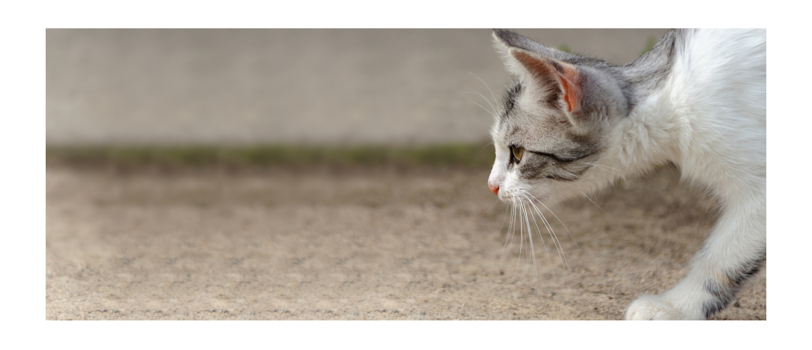

BR Architects
Benefits of having a cat

- They can lower your risk of heart disease
Studies have found that owning a cat can lower your stress levels, which in turn will have a knock-on effect on your risk of cardiovascular disease. Owning a cat can actually lower ones risk of various heart diseases, including stroke, by around 30 percent.
- Their purring helps to heal bones, tendons and muscles
A cat purring is one of the most comforting sounds in the world and while it certainly means your cat is happy and comfortable, the sound has also been long associated with a therapeutic healing ability on human bones and muscle. A cats purr creates vibrations
at a frequency of 20-140 HZ, and studies have shown that frequencies in the 18-35 HZ range have a positive effect on joint mobility after injury, scientists have begun talking about how the cat noise could help humans.
- You'll sleep better
Several studies in the UK have found that people (especially women) prefer to sleep with their cats over their partners, and they even report sleeping better with a cat than with a human bed companion. A recent study from the Mayo Clinic Center for Sleep
Medicine was able to confirm those findings: 41 percent of the people in that study indicated that they slept better because of their pet, while only 20 percent said that it led to disturbances.
- They reduce stress and anxiety
Having a cat around you can actually trigger the release of calming chemicals in your body which lower your stress and anxiety leves. Cats are known for being super low-maintencance and a simple petting session is usually enough to make both you and your cat happy.
- Cats mean fewer allergies (for your kids)
In 2002, the National Institutes of Health released a study that found children under a year old who were exposed to a cat to be less likely to develop all kinds of allergies. According to Marshall Plaut, M.D., chief of the allergic mechanisms section at the
National Institute of Allergy and Infectious Diseases, "high pet exposure early in life appears to protect against not only pet allergy but also other types of common allergies, such as allergy to dust mites, ragweed, and grass."
- Even just watching cat videos is good for you
A study of over 7,000 people by Indiana University Bloomington found that watching cat videos on the internet boosts viewers’ energy and positive emotions while decreasing negative feelings. Turns out all those hours spent on YouTube actually did you some good.
- Why cats make great pets
- Cats are low maintenance. Maybe cats’ most alluring quality is that they are lower maintenance and cost less than dogs, who need walking, training, frequent grooming, and more toys and attention. Cats are also perfect for apartments or city living. They don’t need tons of space to play and explore—nosing their way through the nooks and crannies of your kitchen will keep them occupied for hours.
- They’re quiet. Cats tend to meow when they’re hungry, but you rarely have to worry about being woken up or distracted from a task by a cat begging for attention. This makes them an ideal pet if you’re working from home or have youngsters napping during the day, for example.
- They’re independent. A cat will be there for you when you need them but they’re also perfectly adept at entertaining themselves. Most don’t need—or want—constant attention and you’ll never have to endure guilt-inducing puppy eyes from a cat.
- They keep your house pest-free. You probably already know that cats like to hunt rodents. But they’re also natural insect killers, too, offering the kind of household protection that Venus flytraps promise but rarely deliver. Many cats thoroughly enjoy exterminating bugs such as house flies and spiders, almost like they’re being paid for it
- They have long life spans. The most difficult stage of pet ownership is parting with your beloved companion. While you’re still likely to outlive a cat, their longer lifespans mean you’ll get to have more time with them—up to 20 years, in fact.